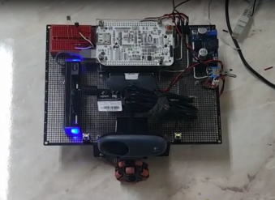
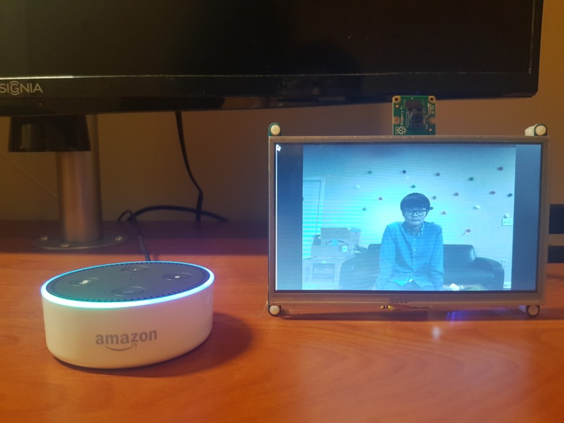

Alan Wootae Song
Real Time Laundry

Real Time Laundry is a system that notifies the availability of laundry machines in a public laundry room.
By having Real Time Laundry, people can monitor the availability of laundry machines and plan their trip efficiently to a public laundry room, saving their time and labor.
Exploration Robot
Exploration Robot is a robot that goes to extreme environments that human cannot go to like places exposed to radiation and too small for people. It then gathers information such as video (real-time), temperature, and light intensity, of the area and send it to the base station.
Smart Picture Frame
Real Time Laundry is a system that notifies the availability of laundry machines in a public laundry room.
By having Real Time Laundry, people can monitor the availability of laundry machines and plan their trip efficiently to a public laundry room, saving their time and labor.